The autoreload extension is already loaded. To reload it, use:
%reload_ext autoreloadThe autoreload extension is already loaded. To reload it, use:
%reload_ext autoreloadvelocity_dispersion_stars_mw (r, v_c:float=30)
| Type | Default | Details | |
|---|---|---|---|
| r | |||
| v_c | float | 30 | km/s |
rho_FFPs_mw (d:float)
| Type | Details | |
|---|---|---|
| d | float | distance from Sun in kpc |
| Returns | float | FFP density in Msun/kpc^3 |
rho_bulge_mw (d:float)
| Type | Details | |
|---|---|---|
| d | float | |
| Returns | float | FFP density in Msun/kpc^3 |
cut (x)
fE (xp, yp, zp)
rsf (xp, yp, zp)
rho_thick_mw (r, z)
| Type | Details | |
|---|---|---|
| r | ||
| z | ||
| Returns | float | FFP density in Msun/kpc^3 |
rho_thin_mw (r, z)
| Type | Details | |
|---|---|---|
| r | ||
| z | ||
| Returns | float | FFP density in Msun/kpc^3 |
zthin (r)
# Define values for the x-axis
# d_arr = np.logspace(-2, np.log10(ds), num=100)
d_arr = np.linspace(1, ds, num=1000)
z_arr = [d* np.sin(np.deg2rad(b)) for d in d_arr]
# Calculate the density values for each component
rho_total_arr = [rho_FFPs_mw(i) for i in d_arr]
rho_bulge_arr = [rho_bulge_mw(i) for i in d_arr]
rho_thin_arr = [rho_thin_mw(dist_mw(d_arr[i]), z_arr[i]) for i in range(len(d_arr))]
rho_thick_arr = [rho_thick_mw(dist_mw(d_arr[i]), z_arr[i]) for i in range(len(d_arr))]
rho_dm_arr = [density_mw(dist_mw(d_arr[i])) for i in range(len(d_arr))]
# Create the log plot
plt.plot(d_arr, rho_total_arr, label="Total")
plt.plot(d_arr, rho_bulge_arr, label="Bulge")
plt.plot(d_arr, rho_thin_arr, label="Thin Disk")
plt.plot(d_arr, rho_thick_arr, label="Thick Disk")
plt.plot(d_arr, rho_dm_arr, label="DM")
# Add labels and legend
plt.xlabel(r"$d$ [kpc]", fontsize=16)
plt.ylabel(r"$\rho$ [M$_\odot$/$\mathrm{kpc}^3$]", fontsize=16)
plt.title('MW, LoS: l = {}, b = {}'.format(l,b), fontsize=16)
plt.legend(fontsize=14)
plt.yscale("log")
plt.xscale("log")
plt.xlim(1e0, ds)
plt.ylim(1e3, 1e10)
plt.show()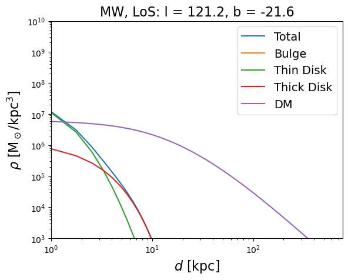
rho_FFPs_m31 (a:float)
| Type | Details | |
|---|---|---|
| a | float | distance from center of M31 in kpc |
| Returns | float | FFP density in Msun/kpc^3 |
rho_nucleus_m31 (a)
| Type | Details | |
|---|---|---|
| a | ||
| Returns | float | FFP density in Msun/kpc^3 |
rho_disk_m31 (a)
| Type | Details | |
|---|---|---|
| a | ||
| Returns | float | FFP density in Msun/kpc^3 |
rho_bulge_m31 (a)
| Type | Details | |
|---|---|---|
| a | ||
| Returns | float | FFP density in Msun/kpc^3 |
einasto (a, rhoc, dn, ac, n)
(259142400.55210653, 0.4102382050077722)
(85192616.57885173, 9.458280445390402e-07)# Calculate the density values for each component
rho_total_arr = [rho_FFPs_m31(dist_m31(d)) for d in d_arr]
rho_bulge_arr = [rho_bulge_m31(dist_m31(d)) for d in d_arr]
rho_disk_arr = [rho_disk_m31(dist_m31(d)) for d in d_arr]
rho_nucleus_arr = [rho_nucleus_m31(dist_m31(d)) for d in d_arr]
rho_dm_arr = [density_m31(dist_m31(d)) for d in d_arr]
# Create the log plot
plt.plot(d_arr, rho_total_arr, label="Total")
plt.plot(d_arr, rho_bulge_arr, label="Bulge")
plt.plot(d_arr, rho_disk_arr, label="Disk")
plt.plot(d_arr, rho_nucleus_arr, label="Nucleus")
plt.plot(d_arr, rho_dm_arr, label="DM")
# Add labels and legend
plt.xlabel(r"$a$ [kpc]", fontsize=16)
plt.ylabel(r"$\rho$ [M$_\odot$/$\mathrm{kpc}^3$]", fontsize=16)
plt.title('M31, LoS: l = {}, b = {}'.format(l,b), fontsize=16)
plt.legend(fontsize=14)
plt.yscale("log")
# plt.xscale("log")
plt.xlim(1e1, ds)
# Show the plot
plt.show()/Users/nolansmyth/opt/anaconda3/lib/python3.9/site-packages/LensCalcPy/utils.py:44: RuntimeWarning: divide by zero encountered in double_scalars
return rhocM31 / ((r/rsM31) * (1 + r/rsM31)**2)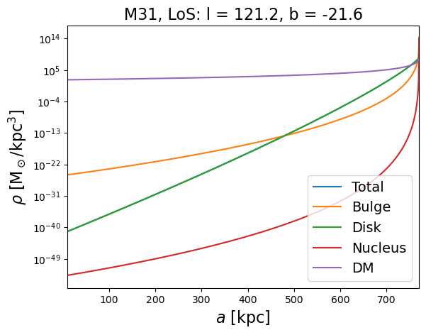
# Calculate the density values for each component
a_arr = np.logspace(-2, 2, 100)
rho_total_arr = [rho_FFPs_m31(a) for a in a_arr]
rho_bulge_arr = [rho_bulge_m31(a) for a in a_arr]
rho_disk_arr = [rho_disk_m31(a) for a in a_arr]
rho_nucleus_arr = [rho_nucleus_m31(a) for a in a_arr]
rho_dm_arr = [density_m31(a) for a in a_arr]
# Create the log plot
plt.plot(a_arr, rho_bulge_arr, label="Bulge")
plt.plot(a_arr, rho_disk_arr, label="Disk")
plt.plot(a_arr, rho_nucleus_arr, label="Nucleus")
plt.plot(a_arr, rho_total_arr, label="Total", ls='--')
# plt.plot(a_arr, rho_dm_arr, label="DM")
# Add labels and legend
plt.xlabel(r"$a$ [kpc]", fontsize=16)
plt.ylabel(r"$\rho$ [M$_\odot$/$\mathrm{kpc}^3$]", fontsize=16)
plt.title('M31 density', fontsize=16)
plt.legend(fontsize=14)
plt.yscale("log")
plt.xscale("log")
plt.xlim(1e-2, 1e2)
# Show the plot
plt.show()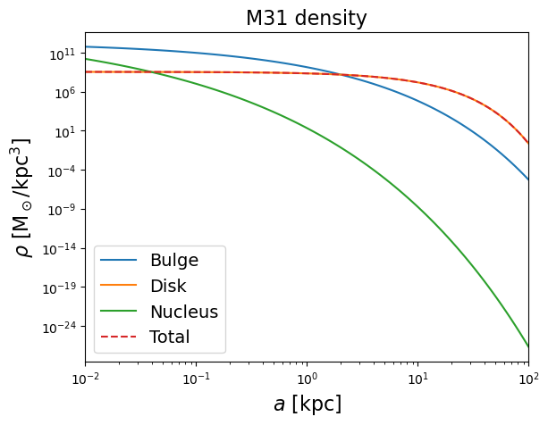
# Define values for the x-axis
# d_arr = np.logspace(-2, np.log10(ds*0.999), num=100)
# Calculate the density values for each component
rho_ffp_mw = [rho_FFPs_mw(i) for i in d_arr]
rho_ffp_m31 = [rho_FFPs_m31(dist_m31(i)) for i in d_arr]
rho_dm_mw = [density_mw(dist_mw(i)) for i in d_arr]
rho_dm_m31 = [density_m31(dist_m31(i)) for i in d_arr]
# Create the log plot
plt.plot(d_arr, rho_ffp_mw, label="MW FFPs", color="blue")
plt.plot(d_arr, rho_dm_mw, label="MW DM", color="blue", linestyle="--")
plt.plot(d_arr, rho_ffp_m31, label="M31 FFPs", color="red")
plt.plot(d_arr, rho_dm_m31, label="M31 DM", color="red", linestyle="--")
# plt.plot(d_arr, rho_total_arr, label="FFPs")
# plt.plot(d_arr, rho_dm_arr, label="DM")
# Add labels and legend
plt.xlabel(r"$d$ [kpc]", fontsize=16)
plt.ylabel(r"$\rho$ [M$_\odot$/$\mathrm{kpc}^3$]", fontsize=16)
plt.title('LoS: l = {}, b = {}'.format(l,b), fontsize=16)
plt.legend(fontsize=14)
plt.yscale("log")
# plt.xscale("log")
plt.xlim(1e0, ds)
plt.ylim(1e-10, 1e10)
# Show the plot
plt.show()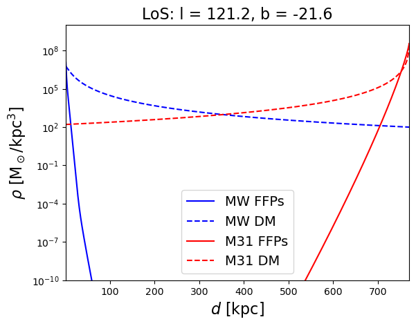
def dN_dlogM(Z, M, M_norm, p):
return Z * (M/M_norm)**-p
def dN_dM(A, M, M_norm, p):
return A * (M/M_norm)**-p / M
def dN_dM_old(A, M, M_norm, p):
return A * (M/M_norm)**-p
p = 1
M_norm = 1 #solar mass
def dN_dlogM_wrapper(M):
return dN_dlogM(1, M, M_norm, p)
def dN_dM_wrapper(M):
return dN_dM(1, M, M_norm, p)
def dN_dM_old_wrapper(M):
return dN_dM_old(1, M, M_norm, p+1)
Z_norm = 1/abs(nquad(dN_dlogM_wrapper,[[-15, -5]], opts={'points': [1e-15, 1e-12]})[0])
Z_norm_2 = 1/abs(nquad(dN_dM_wrapper,[[1e-15, 1e-5]], opts={'points': [1e-15, 1e-12]})[0])
Z_norm_3 = 1/abs(nquad(dN_dM_old_wrapper,[[1e-15, 1e-5]], opts={'points': [1e-15, 1e-12]})[0])
print(Z_norm, Z_norm_2)0.9102392266268375 1.0000000000999996e-15M_arr = np.logspace(-15, -5, 100)
dN_dlogM_arr = Z_norm * np.array([dN_dlogM(1, M, M_norm, p) for M in M_arr])
dN_dM_arr = Z_norm_2 * np.array([dN_dM(1, M, M_norm, p) for M in M_arr])
dN_dM_old_arr = Z_norm_3 * np.array([dN_dM_old(1, M, M_norm, 2) for M in M_arr])
plt.loglog(M_arr, dN_dlogM_arr, label="dN/dlogM")
plt.loglog(M_arr, dN_dM_arr, label="dN/dM")
plt.loglog(M_arr, dN_dM_old_arr, ls = '--', label="dN/dM old")
plt.legend()
plt.show()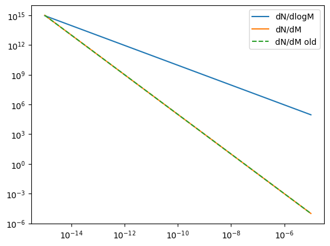
Ffp (p:float=1, m_min:float=1e-15, m_max:float=0.001)
A class to represent a PBH population
| Type | Default | Details | |
|---|---|---|---|
| p | float | 1 | Mass function power law index |
| m_min | float | 1e-15 | Minimum mass in Msun |
| m_max | float | 0.001 | Maximum mass in Msun |
M_arr = np.logspace(-15, -5, num=20)
plt.loglog(M_arr, f.mass_func(np.log10(M_arr)))
plt.xlabel("Mass")
plt.ylabel("dN/dlogM")
plt.show()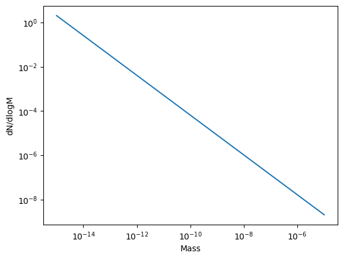
diff_rates_finite_mw = []
for t in tqdm(ts, desc='Computing differential rates for MW (finite=True)'):
diff_rates_finite_mw.append(f.differential_rate_mw(t, finite=True))
diff_rates_finite_m31 = []
for t in tqdm(ts, desc='Computing differential rates for M31 (finite=True)'):
diff_rates_finite_m31.append(f.differential_rate_m31(t, finite=True))plt.loglog(np.array(ts), np.array(diff_rates_finite_mw_10), label="10km/s", linestyle='--')
plt.loglog(np.array(ts), np.array(diff_rates_finite_mw), label="30km/s, dN/dlogM", linestyle='-.')
plt.loglog(np.array(ts), np.array(diff_rates_finite_mw_100), label="100km/s", linestyle='-.')
plt.xlabel(r"$t_E$ [h]", fontsize=16)
plt.ylabel(r"$d\Gamma/dt$ [events/star/hr/hr]", fontsize=16)
plt.title('Milky Way Differential Rate')
plt.xlim(1e-1, max(ts))
# plt.ylim(1e-25,1e-20)
plt.legend()
plt.show()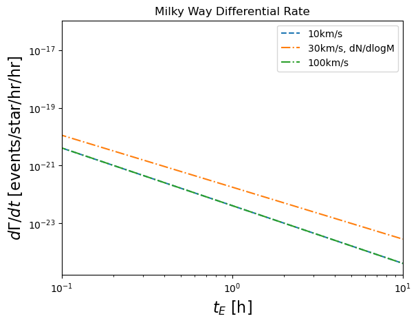
# plt.loglog(np.array(ts), np.array(diff_rates_finite_m31_10), label="10km/s", linestyle='--')
plt.loglog(np.array(ts), np.array(diff_rates_finite_m31), label="30km/s ")
plt.loglog(np.array(ts), np.array(diff_rates_finite_m31_100), label="100km/s", linestyle='-.')
plt.xlabel(r"$t_E$ [h]", fontsize=16)
plt.ylabel(r"$d\Gamma/dt$ [events/star/hr/hr]", fontsize=16)
plt.title('M31 Differential Rate, higher mass cut')
plt.xlim(min(ts), max(ts))
# plt.ylim(1e-51,1e-20)
plt.legend()
plt.show()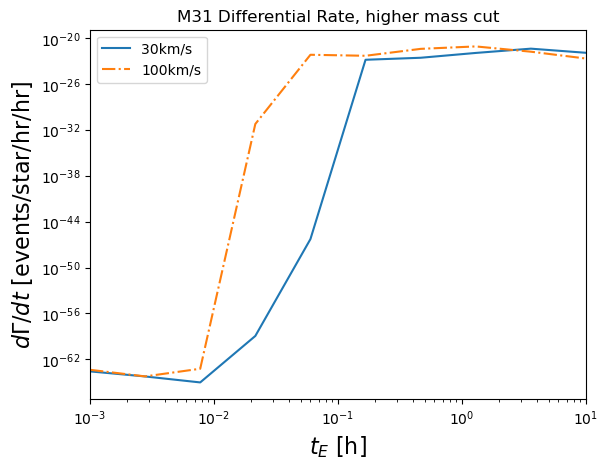
diff_rates_finite_m31 = []
for t in tqdm(ts, desc='Computing differential rates (finite=True)'):
diff_rates_finite_m31.append(f.differential_rate_m31(t, finite=True))
diff_rates_finite_mw = []
for t in tqdm(ts, desc='Computing differential rates (finite=True)'):
diff_rates_finite_mw.append(f.differential_rate_mw(t, finite=True))Computing differential rates (finite=True): 100%|██████████| 10/10 [00:04<00:00, 2.30it/s]
Computing differential rates (finite=True): 100%|██████████| 10/10 [00:29<00:00, 2.93s/it]plt.loglog(np.array(ts), np.array(diff_rates_finite_mw)/(np.array(diff_rates_finite_mw) + np.array(diff_rates_finite_m31)))
plt.xlabel(r"$t_E$ [h]", fontsize=16)
plt.ylabel("Relative contribution from MW", fontsize=16)
plt.xlim(min(ts), max(ts))
plt.ylim(1e-2,2)
plt.xlim(1e-2,1e1)
plt.axvline(0.07, color='k', ls='--')
plt.axvline(3, color='k', ls='--')
plt.show()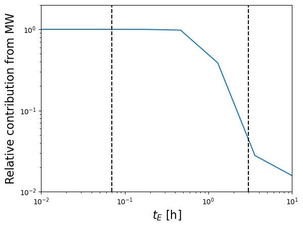
interp_mw = interp1d(ts,diff_rates_finite_mw)
interp_m31 = interp1d(ts,diff_rates_finite_m31)
print(quad(lambda t: interp_mw(t), 0.07, 3)[0]/(quad(lambda t: interp_m31(t), 0.07, 3)[0] + quad(lambda t: interp_mw(t), 0.07, 3)[0]))0.7995616816785961plt.loglog(np.array(ts), np.array(diff_rates_finite_mw), label="MW")
plt.loglog(np.array(ts), np.array(diff_rates_finite_m31), label="M31")
plt.xlabel(r"$t_E$ [h]", fontsize=16)
plt.ylabel("Relative contribution to rate", fontsize=16)
plt.xlim(min(ts), max(ts))
plt.xlim(1e-2,1e1)
plt.axvline(0.07, color='k', ls='--')
plt.axvline(3, color='k', ls='--')
# plt.ylim(1e-2,2)
plt.legend()
plt.show()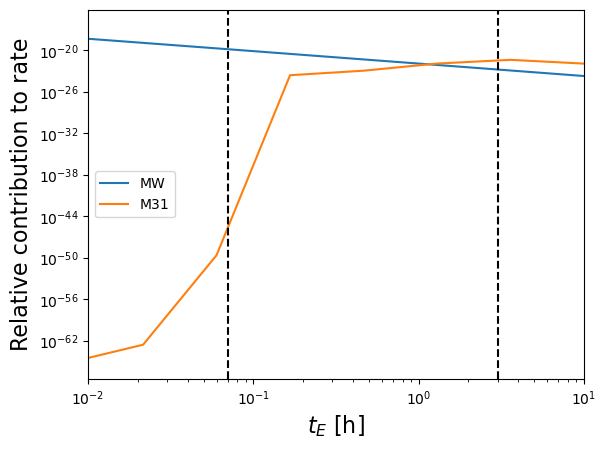
m_test = 1e-8
diff_rates_monochromatic_m31 = []
for t in tqdm(ts, desc='Computing differential rates (finite=True)'):
diff_rates_monochromatic_m31.append(f.differential_rate_m31_monochromatic(t, finite=True, m=m_test))
diff_rates_monochromatic_mw = []
for t in tqdm(ts, desc='Computing differential rates (finite=True)'):
diff_rates_monochromatic_mw.append(f.differential_rate_mw_monochromatic(t, finite=True, m=m_test))Computing differential rates (finite=True): 100%|██████████| 10/10 [00:00<00:00, 76.14it/s]
Computing differential rates (finite=True): 100%|██████████| 10/10 [00:00<00:00, 10.14it/s]def monochromatic_rate_ffp(m, p):
ti = 0.07
tf = 3
f = Ffp(p)
ts = np.logspace(-3, 1, num=40)
diff_rates_monochromatic_m31 = []
diff_rates_monochromatic_mw = []
for t in ts:
diff_rates_monochromatic_m31.append(f.differential_rate_m31_monochromatic(t, finite=True, m=m))
diff_rates_monochromatic_mw.append(f.differential_rate_mw_monochromatic(t, finite=True, m=m))
diff_interp_m31 = interp1d(ts, diff_rates_monochromatic_m31)
diff_interp_mw = interp1d(ts, diff_rates_monochromatic_mw)
quad_m31 = quad(diff_interp_m31, ti, tf)[0]
quad_mw = quad(diff_interp_mw, ti, tf)[0]
return quad_m31 + quad_mwm_arr = np.logspace(-12, -2, num=30)
rates = []
p = 1
for m in tqdm(m_arr, desc='Computing differential rates (finite=True)'):
rates.append(monochromatic_rate_ffp(m, p))Computing differential rates (finite=True): 100%|██████████| 30/30 [01:36<00:00, 3.22s/it]plt.plot(m_arr, rates)
plt.xscale('log')
plt.yscale('log')
plt.xlabel("Mass")
plt.ylabel(r"$\Gamma$")
plt.title("Monochromatic FFP rate")
plt.xlim(min(m_arr), max(m_arr))
plt.ylim(1e-20, 1e-13)
plt.show()
#Plot naive HSC conversion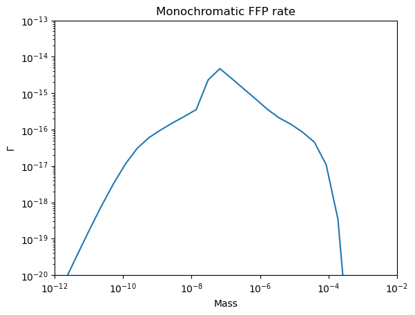
plt.loglog(np.array(ts), np.array(diff_rates_monochromatic_mw), label="MW")
plt.loglog(np.array(ts), np.array(diff_rates_monochromatic_m31), label="M31")
plt.xlabel(r"$t_E$ [h]", fontsize=16)
plt.ylabel("Relative contribution to rate", fontsize=16)
plt.xlim(min(ts), max(ts))
plt.title('Monochromatic, FFP Density distribution, m = {} '.format(m_test))
plt.ylim(1e-30,1e-10)
plt.axvline(0.07, color='k', ls='--')
plt.axvline(3, color='k', ls='--')
plt.legend()
plt.show()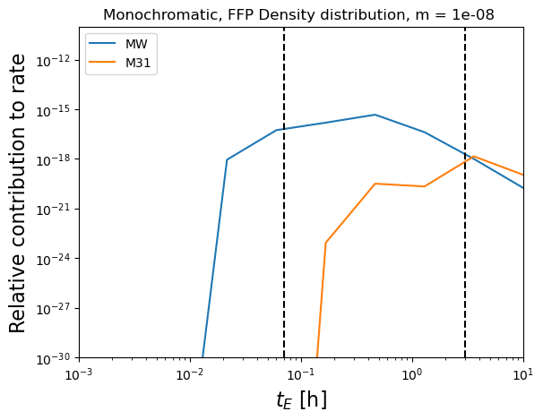
#Test that the mass function is normalized correctly
# test_close(abs(nquad(f.mass_func,[[f.m_min, f.m_max]], opts={'points': [f.m_min, f.m_min*1e3, f.m_min*1e5]})[0]), 1, eps=1e-3)
test_close(abs(nquad(f.mass_func,[[np.log10(f.m_min), np.log10(f.m_max)]], opts={'points': [f.m_min, f.m_min*1e3, f.m_min*1e5]})[0]), 1, eps=1e-3)ts = np.logspace(-7, np.log10(1e3), num=30)
diff_rates = []
for t in tqdm(ts, desc='Computing differential rates (finite=False)'):
diff_rates.append(f.differential_rate_total(t, finite=False))
diff_rates_finite = []
for t in tqdm(ts, desc='Computing differential rates (finite=True)'):
diff_rates_finite.append(f.differential_rate_total(t, finite=True))Computing differential rates (finite=False): 100%|██████████| 30/30 [01:56<00:00, 3.87s/it]
Computing differential rates (finite=True): 100%|██████████| 30/30 [01:27<00:00, 2.90s/it]#new
plt.loglog(ts, diff_rates, color="blue")
plt.loglog(ts, diff_rates_finite, color="red")
plt.xlabel(r"$t_E$ [h]", fontsize=16)
plt.ylabel(r"$d\Gamma/dt$ [events/star/hr/hr]", fontsize=16)
# plt.xlim([0.009, 1e3])
# plt.ylim([1e-20, 1e-7])
plt.xlim(min(ts), max(ts))
plt.show()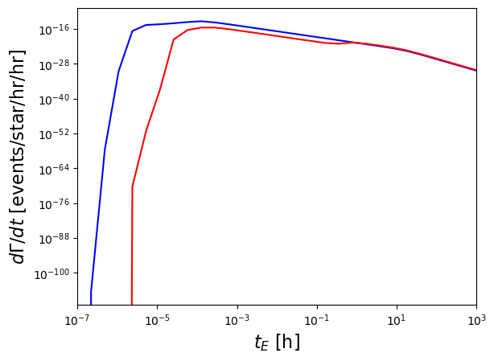
def get_n_events(A, alpha=2, finite=False, m_min=1e-15):
#Now A is number of FFPs per star
f = Ffp(alpha, m_min=m_min)
ti = 0.07
tf = 3
t_es = np.logspace(-2, 1, num=20)
diff_rates = f.compute_differential_rate(t_es, finite=finite)
rate_interp = interp1d(t_es, diff_rates)
dnds = quad(rate_interp, ti, tf)[0]
return n_sources*efficiency*dnds*obsTime*A
def get_constraint_iso(m_iso, alpha=2, finite=False, m_min=1e-15):
f = Ffp(alpha, m_min=m_min)
if m_iso < f.m_min:
raise ValueError('Mass must be greater than the minimum mass of the FFP mass function')
n_events = get_n_events(1, alpha=alpha, finite=finite, m_min=m_min)
#Porportion of ISOs above threshold
proportion_above_threshold = nquad(f.mass_func,[[m_iso, f.m_max]], opts={'points': [f.m_min, f.m_min*1e3, f.m_min*1e5]})[0]*f.Z
#Maximum number of total allowed ISOs per star
N_thresh = 4.74/n_events
#Maximum number of allowed ISOs per star of mass m_iso or above
return N_thresh * proportion_above_thresholdm_mins = np.logspace(-15, -7, num=24)
def get_constraint_iso_wrapped(m_min):
return get_constraint_iso(1e-7, alpha=2, finite=True, m_min=m_min)
with Pool() as p:
isos_per_star_arr = list(tqdm(p.imap(get_constraint_iso_wrapped, m_mins), total=len(m_mins)))100%|██████████| 20/20 [06:52<00:00, 20.64s/it]# Expect to see that results are independent of m_min until the cutoff is in the range that HSC is sensitive to
# Looks good!
plt.plot(m_mins, isos_per_star_arr)
plt.xscale('log')
plt.yscale('log')
# plt.ylim(1e7, 1e8)
plt.xlabel(r"$m_{min}$ [M$_\odot$]", fontsize=16)
plt.ylabel(r"$N_{ISO}$", fontsize=16)
plt.title('Number of ISOs per star of mass 1e-7', fontsize=16)
plt.show()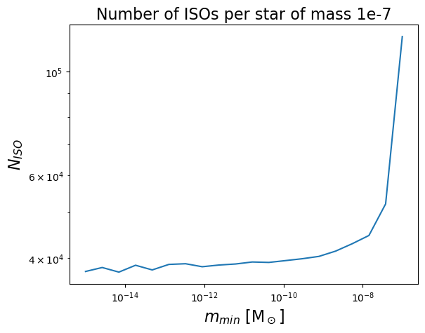